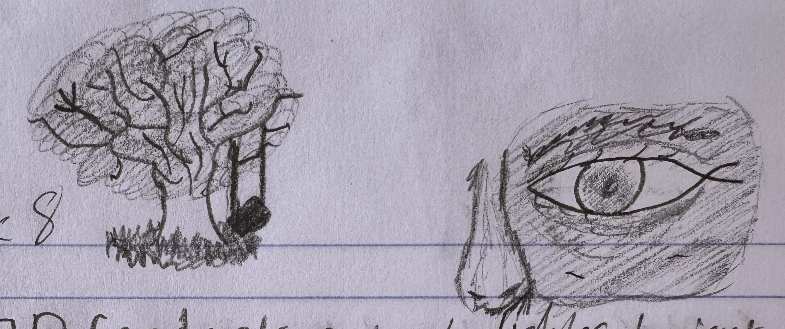
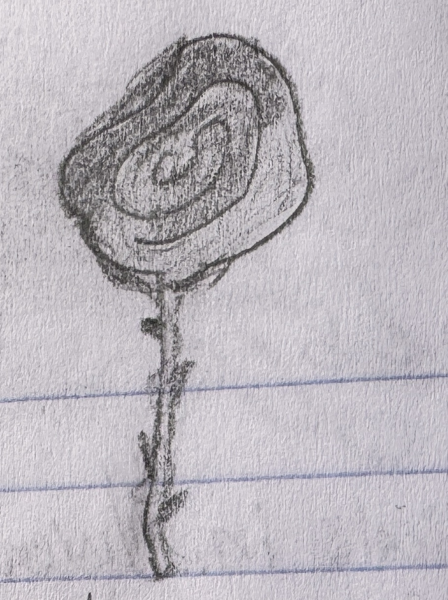
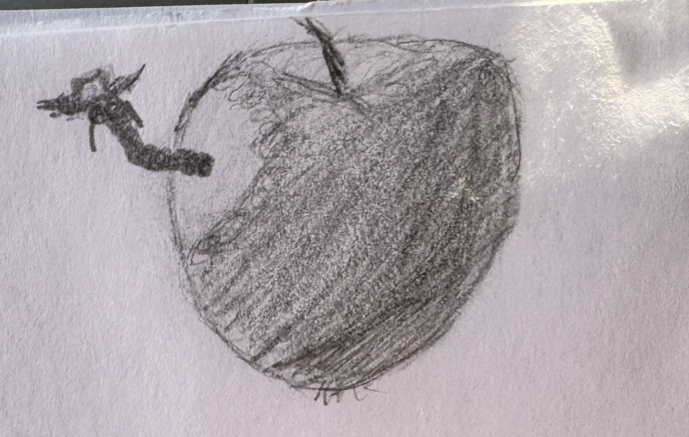
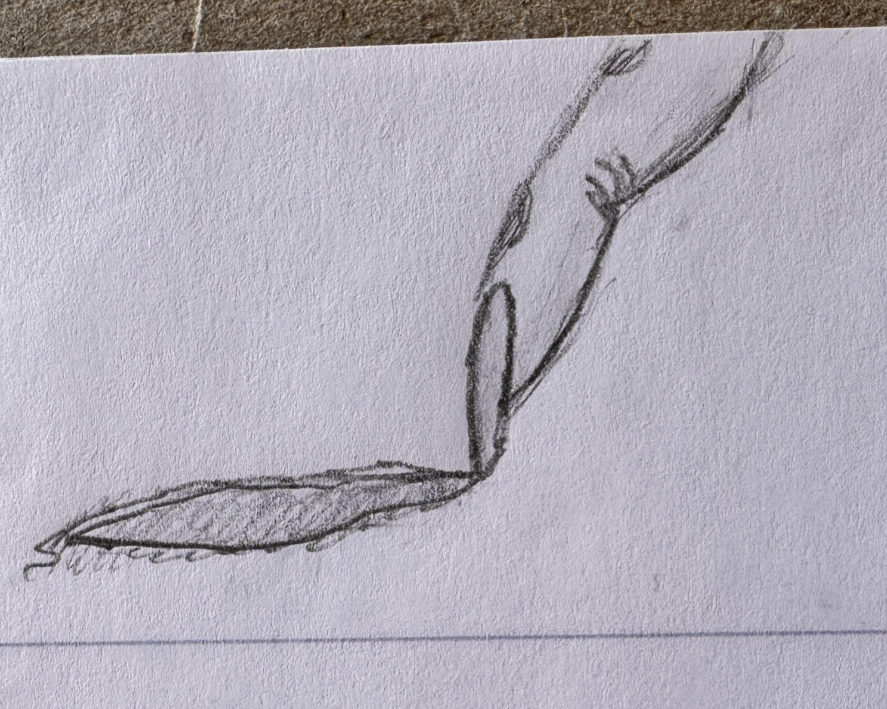
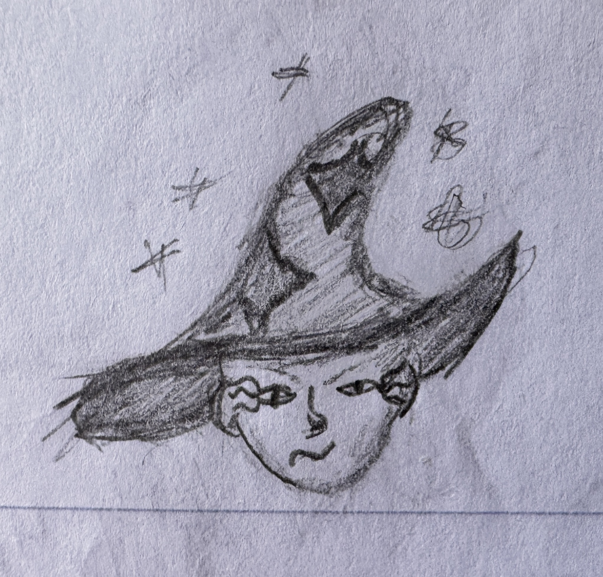
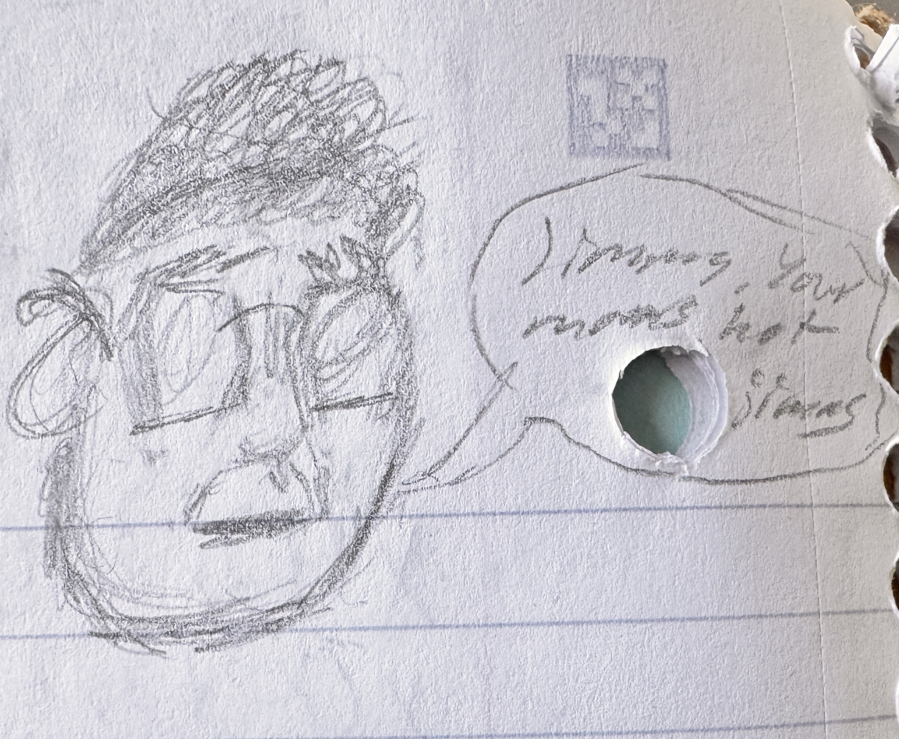
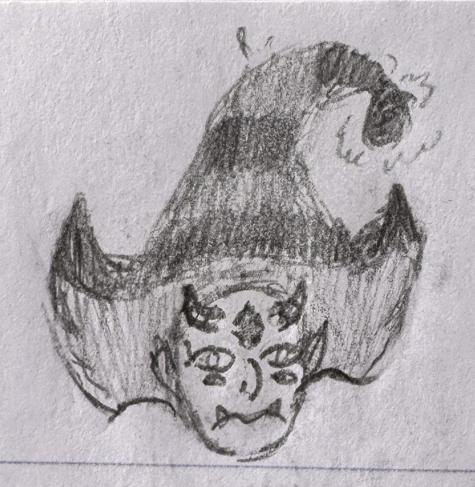
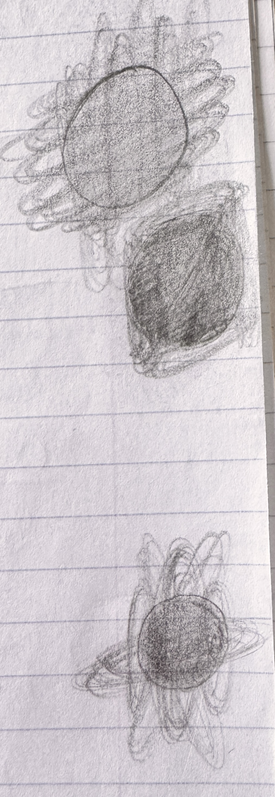
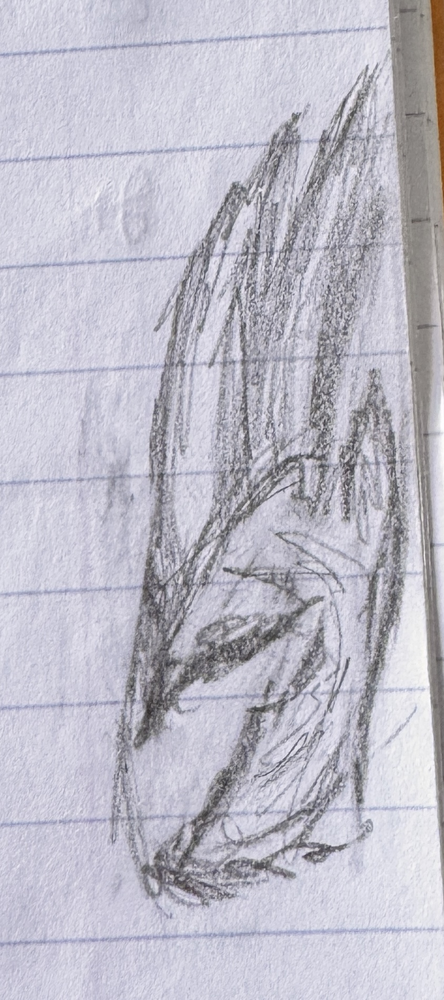
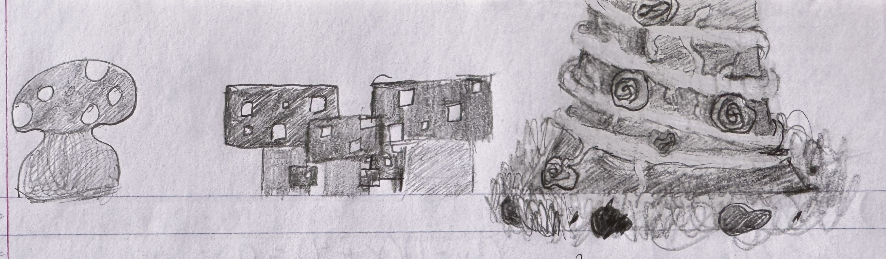

Something about me that I've been doing ever since I could rember is doodling in the middle of class. I scarcely
actually draw anything outside of that. The only exception is when I'm supposed to be doing work but I got distracted
because I started to doodle.
What does that mean?
It means I've collected quite the amount of doodles in all of my notebooks. While I'd love to be able to put them all
here, that's not something that I can do. Mainly because I'm not proud of most of them but also because a lot of
the notebooks have been thrown away over the years. So the best that I'll be able to do is to show the one's I've
collected so far in my college notebooks.
How do I doodle?
As doodles imply, I only draw small quick things that can occupy my mind while I sit in class and half pay attention.
There's typically a way that I like to draw and it follows a pattern typically. That pattern typically goes as follows
Random shapes and vertices
A certain thing that im interested in drawing: muskets, swords, masks, etc
A random thing away from the thing im focused on
Some of my favorite Doodles
This one is of the series of the current thing im interested in drawing; witch hats. So far with
all the ones that I've made so far, this is the one that I like the most.

The tree was part of the past interest that I had and the half face is Zuko from
Avatar the Last Airbender. He's someone that I draw every once in a while(Only the scarred
half of his face).

The rose is in the same boat as Zuko. It's never my special interest for drawings, but I will
draw them again and again.

This one has no meaning. I just thought it'd be fun to draw a worm coming out an apple but the worm is
also wearing a cowboy hat and glasses. Just a cool little guy.

I think I read something that described a nail cutting through someones flesh the previous night before
I drew this. So, in class the next day that was what I drew.

Part of the early days of the witch hats and is actually the first one that I ever made. One of the only
ones where I ever cared enough to actually let a witch wear it.

Not actually sure what led me to draw this in class instead of paying attention. Here we are though
with this abomination born into the world.

Unfortunately one of the most detailed faces I've ever drawn. If you couldn't tell I don't really
like doing them that much. It's a major reason that I don't give the hats a witch anymore. The only
exception to my face clause is Zuko and apparently Carl Wheezer. I think the inspiration behind this
particular witch was me reminicising about watching Star Versus the Forces of Evil.

Not the best or most detailed drawings I've ever done, but there's sometihng about the way they
look that tickle something in my brain. So, orbs with rings around them was it's own
interest for about a week

Like faces, I try to avoid drawing hands as much as possible, but out of all the ones that I've ever
drawn this might be the one I'm the most okay with. In my typical style however, I had to make the
nails long and sharp. I don't often draw completely human things. I have a deep seated fascination
for things that imitate the human form.

My longest standing series of doodles was mushrooms. I was hooked on drawing mushrooms for like
2 months for some reason. I guess I felt that they had so many different application with the drawings
that I could've made. For the tree on the right I felt like drawing something a little fancier I think.
So I gave it some flowers and vines as well as I adorned the area around the base and called it a day.